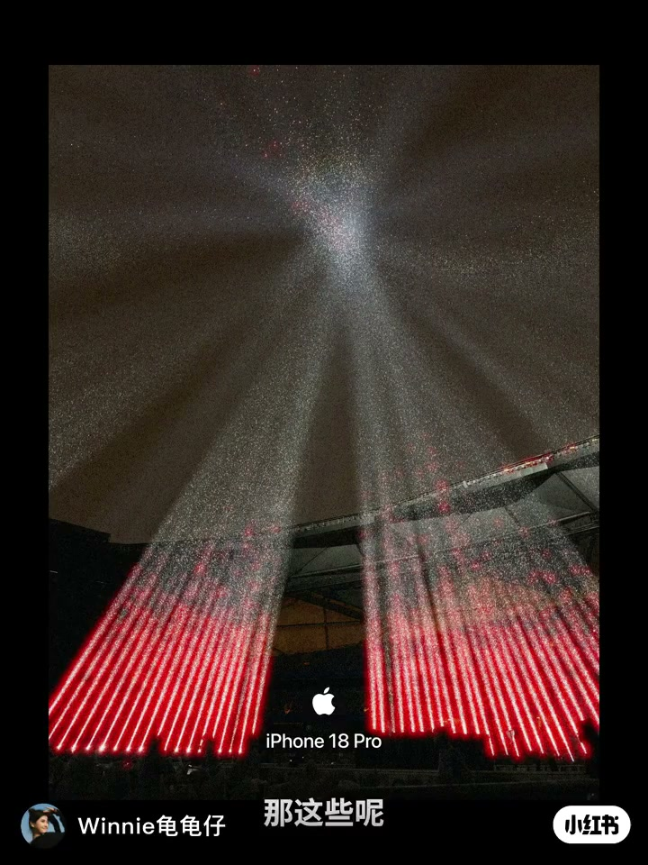
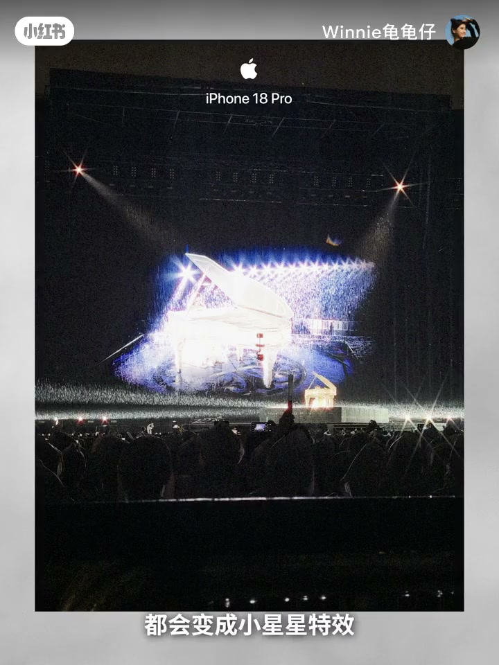
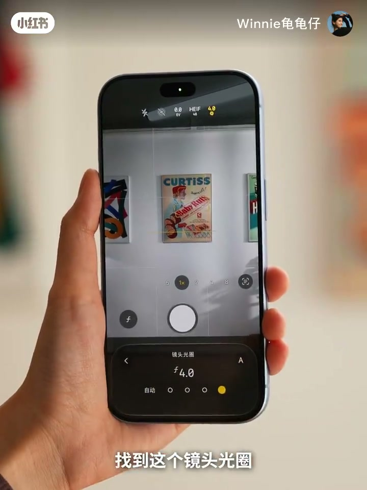
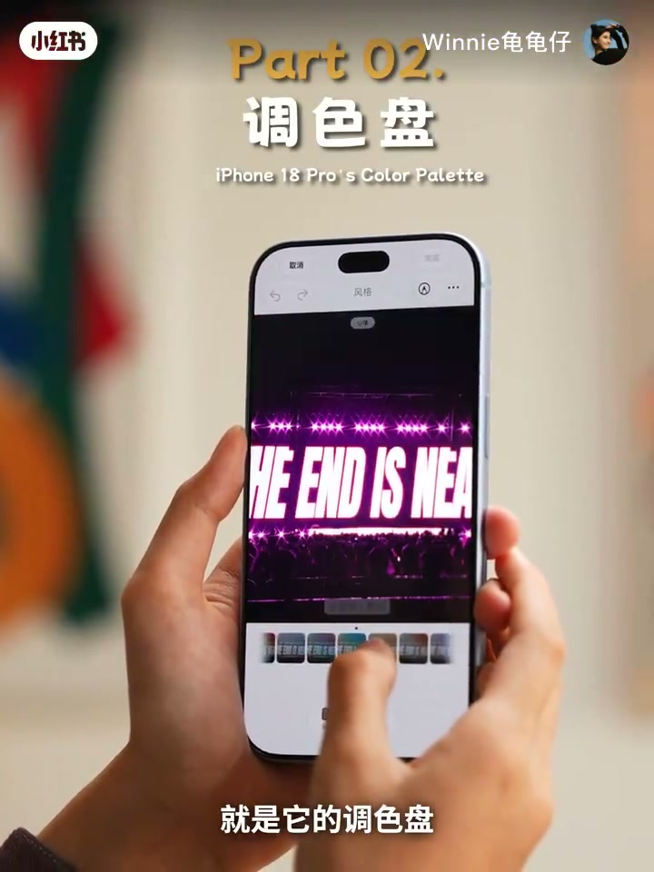
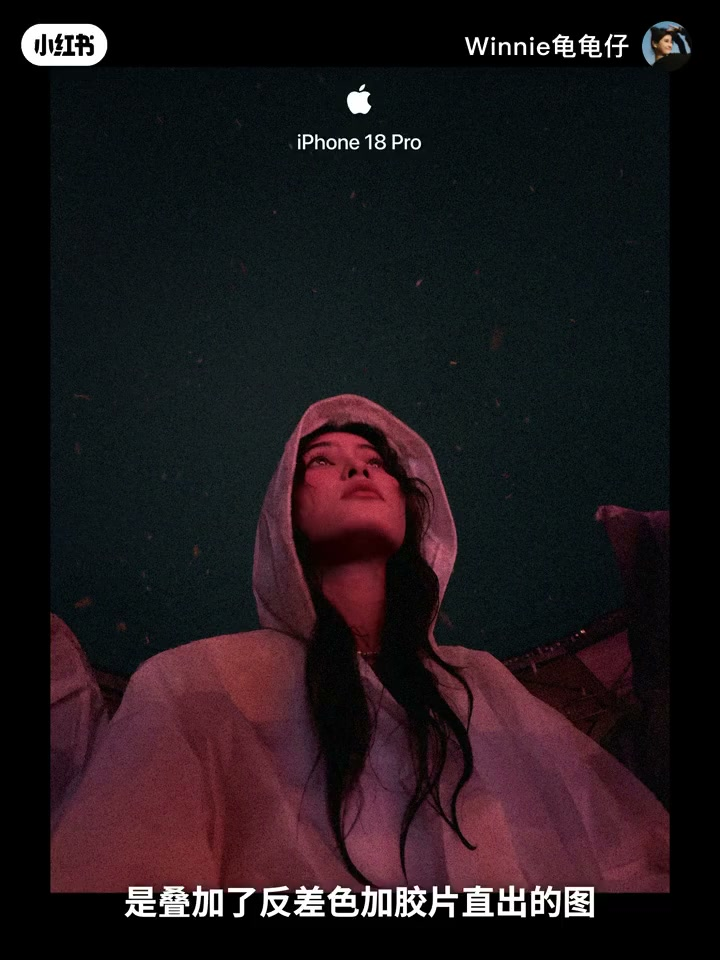
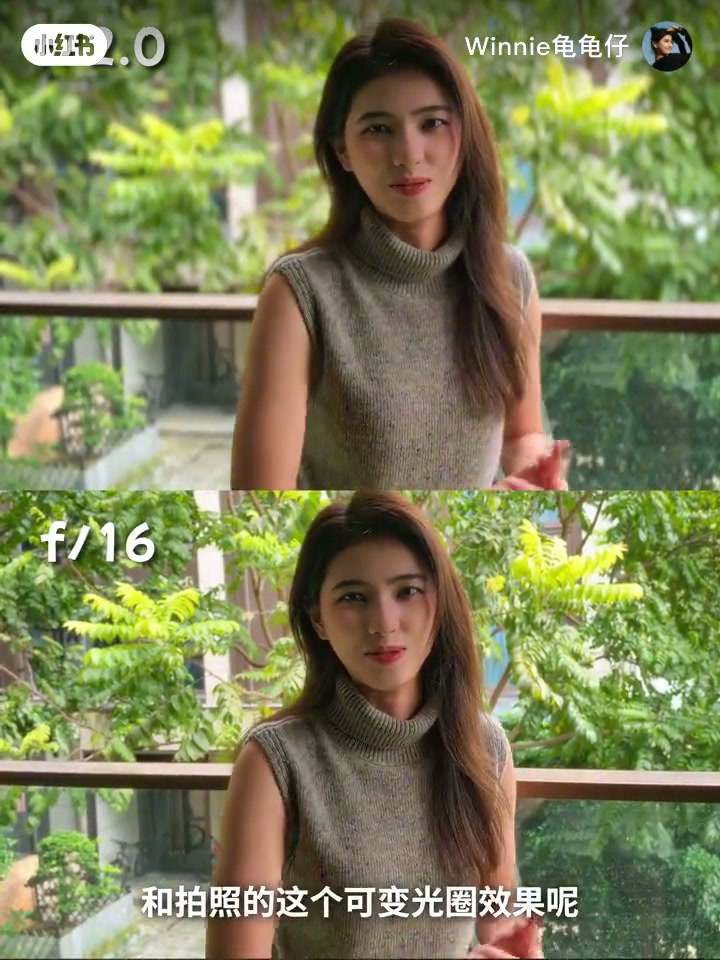
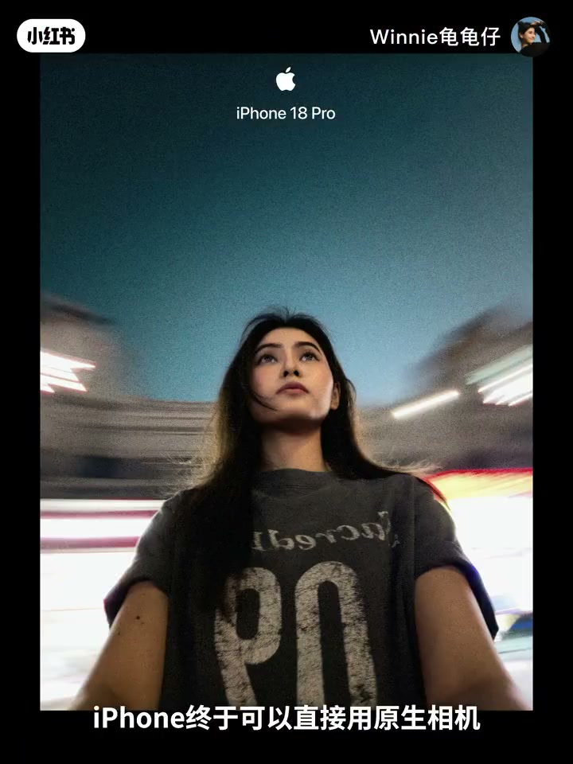

内容要点
小红书 UP 主 Winnie龟龟仔（口播自称龟龟）用原相机直出样片开场，声称今年 iPhone 18 Pro「有意思的东西几乎都集中在影像上」，并整理五个她最近高频使用的升级：星芒、调色盘胶片感、双击追踪、电影效果，以及 Pro 相机控制慢门；片尾再附一套她每次换机都会检查的原相机系统设置。下列实录按时间线展开，观点均标注为作者体验。
知识结构
今年好玩点几乎都在影像；若日常用得到，升级 Pro「真的不亏」（作者观点）。
可变光圈收至约 f/4 出舞台星芒；仅 1×/2× 可用，4×/8× 自动取消。
摄影风格新增纹理、颗粒与柔化皮肤；「反差色+胶片」适合演唱会出片。
对比 17 Pro Max 雨天失焦痛点；双击屏幕稳定追主体，也可拍宠物。
一倍/二倍视频可后期调虚化；声音侧电影效果滑杆压环境噪声。
原相机分控快门/光圈/白平衡，低快门加转动手机出拖影。
关相机调整、4K60、空间音频、高效、HEIF 48MP——换机例行检查。
这条视频的决策逻辑不是「参数全面碾压」，而是五个可复用的影像玩法是否命中你的拍摄场景；命中则作者认为换机划算，同时用系统设置把画质与后期弹性兜住。
00:00–00:21开场：今年好玩的点几乎都在影像
视频一上来先甩一组演唱会现场照，字幕写明「都是我用 iPhone 18 Pro 原相机直出的照片」。作者接着判断：今年有意思的升级几乎都集中在影像，而且「比我想的还更好玩一些」。她把今天的内容框成五个最近用得很频繁的升级，并给出立场——如果你平时会用得到，升级 Pro「真的不亏」。这是体验向推荐，不是参数评测。

00:21–00:56第一个升级：可变光圈星芒，演唱会「想不出片都难」
第一个被点名的是星芒效果。作者把它归因于本代可变光圈：舞台上发光的大排灯会变成小星星特效，画面立刻华丽起来。操作路径很具体——打开拍摄界面右下角「镜头光圈」，选到 4（画面可见滑到 f 4.0），就能拍出这种梦幻星芒。
边界也写得很清楚：星芒目前只能在 1 倍和 2 倍焦段使用；切到 4 倍、8 倍会自动取消。因此现场策略是先拍出星芒，再调整构图。


00:56–01:32第二个升级：调色盘摄影风格，原相机直出胶片感
第二部分标题直接打出「Part 02. 调色盘」。作者说今年摄影风格新增了纹理和颗粒，还可以柔化皮肤，所以用原相机就能拍出胶片感。她实测推荐「反差色 + 胶片」组合拍演唱会舞台，称更出片、更有氛围；并提到前几天看邓紫棋演唱会时用这套组合出了不少「神图」。
画面给出原图与叠加风格后的对照，再叠加纹理和颗粒后，她形容质感「非常绝」，「有一种拿着 4S 拍照的感觉」——这是主观比喻，用来强调复古味，而非声称参数复刻。


01:32–02:06第三个升级：双击追踪，雨天演唱会对焦不再抓狂
「双击追踪」一开始她没 get 到使用场景，看完演唱会后「彻底悟了」。对比体验是：用 17 Pro Max 时好不容易在雨天对上舞台上的姐姐，对方一转身又失焦；换成 18 Pro 后双击屏幕就能追踪，跟得很稳，不必全程手动找人对焦。她强调看到好画面却对不上焦、或干等对焦的过程很抓狂，所以给这个功能「大拇哥」。生活场景也可用来拍小狗，画面更不易失焦。本段以口播对比为主，未提供同机位对照素材。
02:06–02:47第四个升级：电影效果——后期虚化与环境降噪
电影效果被她形容为「挺神奇」：用主摄一倍和二倍焦段拍的视频，可以在后期调整虚化，效果和拍照的可变光圈类似。画面用上下分屏展示浅景深与标 f/16 的更深景深对照。
声音侧也可以选电影效果：滑杆越往右，环境噪音越小。她站在路边做现场对比——背后车流、旁边大喇叭；开启后称噪音一下子弱很多，基本上只听到自己的声音。据此推论：以后用后置拍 Vlog，就不用太担心环境杂音干扰。

02:47–03:16第五个升级：Pro 相机控制，原相机玩王家卫式慢门
第五点是 Pro 相机控制：作者称 iPhone 终于能用原生相机拍出「王家卫同款」慢门照片。今年原相机可以单独控制快门速度、光圈和白平衡——把快门调低，再旋转手机，就能拍出梦幻、有动态感的照片；白天也能拍电影感拖影。
她回忆上学时常拿相机和三脚架去天桥拍车流光轨，现在用原相机就能玩同类效果。画面给出夜景车流拖影样片作为结果示意。

03:16–03:58附赠：让画质更清晰的原相机参数设置
片尾不是第六个「升级卖点」，而是一套她每次换新 iPhone 都会检查的设置：打开设置 → 相机控制，把「相机调整」关闭，避免拍摄时误触相机控制键；录制选 4K 60 帧，声音选空间音频，以便事后在相册里继续调录音室、电影效果等混音选项；格式选高效省空间；图片格式选 HEIF、48MP，兼顾体积与清晰度。调完就可以「放心开始拍一拍」。结尾署名龟龟，下期再见。
详细文字转录（120段）
以下内容按 Whisper 原始分段完整呈现，可能包含识别误差；正文已按画面与语境校正专有名词，转录区保持原样以便核对。
那这些都是我用iPhone 18 Pro原相机取出的照片
说真的它今年有意思的东西几乎都集中在影像上
而且真的比我想要中药更好玩一些
那今天我就整理了5个我觉得非常有意思
也是我最近用的很频繁的升级
如果你平时会用得到的话
那升级iPhone 18 Pro真的不亏
那第一个要夸的就是它的星芒效果
用了它演唱会想不出头都难
那它其实是这一次iPhone 18 Pro升级的可变光炫的功劳
用了它之后呢
舞台上一切发光的大排灯都会变成小惺惺特效
画面一下子就变得华丽起来有没有
使用方法也非常的简单
就是点开这个拍摄界面的右下角
找到这个镜头光圈
选到4
就可以拍出这种非常梦幻的效果了
但是要注意哈
这个星芒效果目前是只能在1倍和2倍的焦段下面用
切换到4倍和8倍的时候呢
就会自动取消了
所以咱们现场可以先拍
然后再调整构图就OK了
那第二个我很推荐大家用的呢
就是它的调色盘
今年iPhone 18 Pro的摄影风格
新增了纹理和颗粒
还可以柔化皮肤
也就是说用原相机呢
就能指出胶片感的照片了
那经过我的实测
用这个反擦色加胶片的滤镜
在演唱会上拍舞台是比较出篇有氛围感的
前几天看邓紫棋演唱会的时候呢
我就用这个组合出了非常多的神图啊
那这张呢就是现场的原图
这张呢是叠加了反擦色加胶片指出的图
看起来是不是就更加有氛围感一点
后期再加个纹理和颗粒呢
加完之后质感真的非常的绝
就有一种拿着4S拍照的感觉
复古味非常的浓
第三个双击追踪
这个功能呢
其实一开始我没有get到它使用场景到底是什么
看完演唱会之后我彻底误了呀
我当时用17 Pro Max
好不容易在雨天对战上了舞台上的姐姐
结果它一转身好家伙又失焦了
那用iPhone 18 Pro就没有这个烦恼
双击屏幕就能追踪
而且跟得非常的稳
不需要全程找人对焦了
毕竟看到好的画面想拍
但是没有对上焦
或者是等对焦这个过程呢
真的很抓狂
所以双击最终这个功能呢
必须给个大谋个
在生活中呢也可以用它来拍小狗
拍出来的画面也是很清晰不容易失焦的
第四个电影效果
那这个功能呢还是挺神奇的
就是直接用主摄的EBAY和二倍焦段拍摄的视频呢
可以通过后期调整虚化效果
和拍照的这个可变光圈效果呢是一样的
而且在声音这里呢
也可以选择电影效果
越往右拉环境噪音就越小
给你们听听对比哈
那现在呢我现在在路边
背后呢就是车流
旁边还有那种大喇叭的声音
现在是原生的一个状态
现在我们开启相机的快感
OK那现在是在声音里面
开启了电影效果的状态
是不是一下子噪音就变弱了非常非常多
基本上就只能听到我的声音了
这样以后出去用后置镜头拍的VLOG呢
就不用担心环境里面有杂物
或者有嘈杂的声音了
第五个就是PRO相机控制
iPhone终于可以直接用原生相机
拍出玩家味同款的慢门照片了
今年原相机呢可以单独控制
快门速度光圈白平衡
所以你只要拿起iPhone把快门调低
然后旋转自拍
就能直接拍出这种很梦和很有动态感的照片了
甚至是白天呢也可以用它来拍一些很有电影感的拖影
那之前我还在上学的时候呢
就会经常拿相机和散热架
去天桥拍这种车流光汇
没想到现在拿iPhone原相机就可以玩了
那最后想和大家分享几个
让画质更加清晰的iPhone原相机参数设置
首先我们打开设置
找到相机控制
把相机调整关闭
这样就不会在拍摄过程中误触到相机控制键了
然后在录制选项里面呢
选择4K 60帧
画面呢会更加细腻也更加流畅一些
声音呢选择空间音频
这样拍完之后就可以在相册里面继续调整录音室
电影效果这些回音效果了
格式这里呢选择高效
同样的画质可以省下很多的空间
图片格式的话就可以选择HEIF
48MP
这样拍出来的照片不会太大
也会更加清晰
这几个呢基本上就是我每次换新iPhone
都会顺手检查一遍的设置
调完之后就可以放心开始拍一拍了
好啦以上本期视频的全部内容啦
我是鬼鬼
我们下期视频再见喽